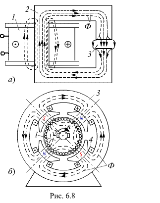

6.2.1. Назначение и типы магнитных цепей
Магнитная цепь - это совокупность устройств, содержащих ферромагнитные тела, электромагнитные процессы в которых могут быть описаны с помощью понятий магнитодвижущей силы, магнитного потока и разности магнитных потенциалов.
Различают:
- магнитные цепи с постоянными магнитами;
- магнитные цепи, в которых магнитный поток создается постоянным или переменным током, протекающим в одной или нескольких обмотках, размещённых на ферромагнитных сердечниках.
Обычно в электромагнитных устройствах стремятся на пути магнитного потока разместить ферромагнитные материалы 2 с относительной магнитной проницаемостью m = 500…5000, чтобы уменьшить величину тока намагничивающей обмотки 1 (рис. 6.8, а). Однако между частями магнитопровода неизбежны воздушные зазоры (рис. 6.8, б), или магнитопровод специально изготавливают с регулируемым зазором 3 (см. рис. 6.8, а) с магнитной проницаемостью mа » m0 = 4p Ч10-7 Гн/м.
В низкочастотных устройствах (f < 1000 Гц) катушки размещают на ферромагнитных сердечниках, что приводит к многократному усилению магнитных потоков и их концентрации в самом ферромагнитном материале, и, как следствие, создается нужная конфигурация магнитного поля и магнитной цепи. Например, в четырёхполюсном генераторе постоянного тока (рис. 6.8, б), катушки 4 возбуждения магнитного потока Ф размещены на полюсах статора; магнитные силовые линии проходят через соседние северный N и южный S полюсы, замыкаясь через статор 3 и цилиндрический якорь 1, при вращении которого в расположенной на нём обмотке индуктируется ЭДС. С помощью коллектора и щёток 2 обмотка якоря подключается к приёмнику энергии.
Если вся магнитная цепь выполнена из одного ферромагнитного материала и имеет одинаковое сечение, то она называется однородной. Магнитная цепь, содержащая материалы с различными магнитными свойствами или имеющая воздушные зазоры, называется неоднородной. Магнитная цепь, во всех сечениях которой магнитный поток Ф одинаков, называется неразветвлённой. В разветвлённой магнитной цепи потоки на различных участках неодинаковы.